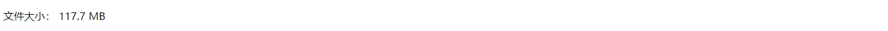

原文出处:本文由博客园博主我是渣渣聪提供。
原文连接:https://www.cnblogs.com/missdx/p/11213441.html
原文连接:https://www.cnblogs.com/missdx/p/11213441.html
Filters可以称为过滤器。下面我们简单介绍是如何使用他的。
Filters的语法： {{ value|filter_name:参数 }}
Django大概提供了六十个内置过滤器，下面我们简单介绍几个。
首先，基本操作都知道，urls.py中：
1 from app01 import views
2
3 urlpatterns = [
4 path('demo/', views.demo),
5 ]然后，views.py中：
1 def demo(request):
2 passpass需要我们自己替换。
另外创建一个demo.html显示结果。
length
返回值的长度，作用于字符串和列表。


1 def demo(request):
2 name = '徐雪'
3 return render(request,
4 'demo.html',
5 {
6 'name':name
7 })1 <body>
2 {{ name }}-{{ name|length }}
3 </body>default
如果一个变量是false或者为空，就是用默认值，否则使用变量的值。
1 <body>
2 {{ bucunzai|default:'不存在' }}
3 </body>filesizeformat
将值格式化为一个“人类可读”的文件尺寸
1 def demo(request):
2 file_size = 123456789
3 return render(request,
4 'demo.html',
5 {
6 'file_size':file_size
7 })1 <body>
2 <p>
3 文件大小：
4 {{ file_size|filesizeformat }}
5 </p>
6 </body>
切片
1 def demo(request):
2 name_list = ['张三','李四','王五','王二麻子']
3 return render(request,
4 'demo.html',
5 {
6 'name_list':name_list
7 })1 <p>
2 切片前：
3 {{ name_list }}<br>
4 切片后：
5 {{ name_list|slice:'1:3' }}
6 </p>
date
时间格式化
1 def demo(request):
2 from datetime import datetime
3 now = datetime.now()
4 return render(request,
5 'demo.html',
6 {
7 'now':now
8 })1 <p>
2 格式化之前：
3 {{ now }}<br>
4 时间格式化：
5 {{ now|date:'Y-m-d H:i:s' }}
6 </p>safe
Django的模板中会对HTML标签和JS等语法标签进行自动转义，原因显而易见，这样是为了安全。但是有的时候我们可能不希望这些HTML元素被转义，比如我们做一个内容管理系统，后台添加的文章中是经过修饰的，这些修饰可能是通过一个类似于FCKeditor编辑加注了HTML修饰符的文本，如果自动转义的话显示的就是保护HTML标签的源文件。为了在Django中关闭HTML的自动转义有两种方式，如果是一个单独的变量我们可以通过过滤器“|safe”的方式告诉Django这段代码是安全的不必转义。
1 def demo(request):
2 safe = "<a href='https://www.baidu.com'>safe标签</a>"
3 return render(request,
4 'demo.html',
5 {
6 'safe':safe
7 })1 {{ safe|safe }}
点击html上面的连接就会跳转。
truncatechars
如果字符串字符多于指定的字符数量，那么会被截断。截断的字符串将以可翻译的省略号序列（“...”）结尾。
1 def demo(request):
2 text = '发的反对法士大夫打发士大夫大师傅大师傅士大夫地方都是发生的广泛的的废墟发生发射点'
3 return render(request,
4 'demo.html',
5 {
6 'text':text
7 })1 <p>
2 省略前：
3 {{ text }}<br>
4 省略后：
5 {{ text|truncatechars:20 }}
6 </p>自定义Filters
首先在自己的app文件夹下面创建一个Python Package，命名为templatetags。然后在这个文件夹下面新建一个py文件，我命名为myfilters.py。到这里基本工作已完成。接下来编写自己的自定义filters。
1 from django import template
2 register = template.Library()
3
4 # 告诉django的模板语言我现在有一个自定义的filter语言，名字叫demo
5 @register.filter(name='demo')
6 def add_one(arg):
7 return '{} is good!'.format(arg)1 {% load myfilters %}
2 <!--name是从views.py中传过来的变量，demo是myfilter.py中的filters方法-->
3 {{ name|demo }}
上面是传入一个值，两个值怎么办？
1 from django import template
2 register = template.Library()
3
4 # 告诉django的模板语言我现在有一个自定义的filter语言，名字叫more
5 @register.filter(name='more')
6 def add_more(arg,arg1):
7 '''
8 第一个参数永远是管道符前面的参数
9 :param arg:管道符前面的变量
10 :param arg1:冒号后面的变量
11 :return:
12 '''
13 return '{} is {}!'.format(arg,arg1)1 {% load myfilters %}
2 <!--name是从views.py中传过来的变量，more是myfilter.py中的filters方法-->
3 {{ name|more:'美丽的。' }}